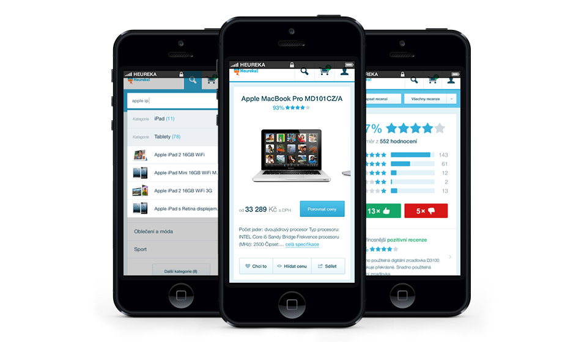

PAVEL HUZA
I'm a Czech Republic based web designer & front‑end developer focused on crafting clean & user‑friendly experiences.
CHECK MY WORKPORTFOLIO
Below you can see some projects I've been working on lately. I divide each project into four follow-up areas: comprehensive research, wireframing, design & development. This process allows me to create great product with client goals in mind.
Restu mobile site
For czech startup Restu.cz I created mobile version of their site. I was responsible for UI design, interactions & front-end development.

Danfil Kids Jewellery
Client wanted online configurator, where customers can create custom kids jewellery. I was responsible for UI design, interaction design & front-end development.

CT Author Cup
CT Author Cup is traditional mountain bike race with eighteen years experience. I provided them everything from logo design, website design & development to printed materials.

Mujjo accesories
Fun side project, where I designed simple shopping experience for one of my favourite apple accessory.

Heureka mobile experience
With team at Heureka we are preparing new mobile experience for our site. I'm responsible for UI / UX & interaction design.
